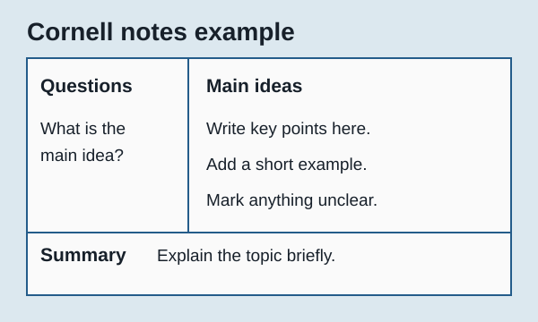

Note-Taking

Record the ideas that matter
Add the class name and date. Focus on main ideas, examples, and questions instead of copying every word.
After class, fill in missing details and write a short summary. Use your notes to explain the topic without looking at the page.
Compare three methods
Choose a format that fits the lesson. You can use different methods for different classes.
| Method | How It Works | Best Use |
|---|---|---|
| Cornell notes | Separate notes, questions, and a short summary. | Reviewing a lecture and testing recall. |
| Outline | Arrange main ideas and supporting details in a list. | Lessons with clear topics and subtopics. |
| Concept map | Connect related ideas with lines and short labels. | Seeing how several ideas relate. |
Use your notes after class
Mark anything that is unclear and ask about it. Cover your notes and answer the questions you wrote. Check your answers and spend more time on the parts you missed.
Learn more from the Cornell Note Taking System and UNC's note-taking guide.